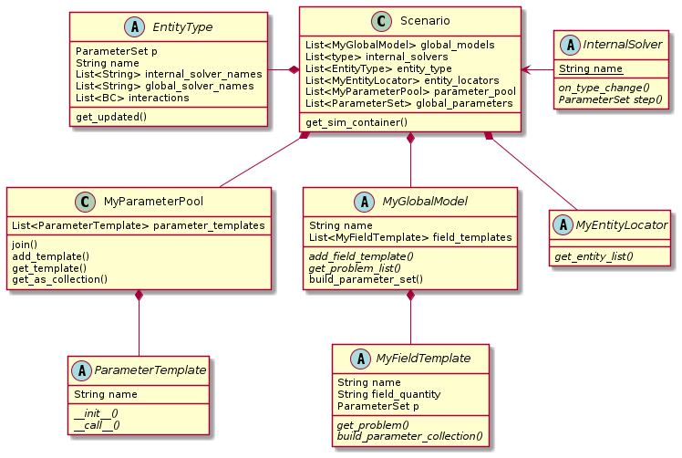

Scenario usage and construction¶
The Scenario class is an object factory for SimContainer.
It is and aggregate of two abstract factory classes (MyGlobalModel, MyEntityLocator),
one template object (ParameterTemplate),
the parameter pool, entity types (instances of EntityType)
and internal solver types (as types subclassed from InternalSovler).

Fig. 7 Factory classes are bundled in the Scenario class¶
SimContainer construction¶
The scenario object contains information about the simulation scenario (in the form of template and factory objects), but doesn’t instantiate the costly simulation objects at creation.
Instead, when the actual SimConatiner instance ins needed, in custom code or from within StateManager,
the get_sim_container() method gets invoked on the Scenario instance (Listing 4).
It returns the constructed SimContainer instance,
which can run the simulation by invoking SimContainer.initialize() and SimContainer.run() methods.
This allows all simulation object to be hidden from the user, though access/inspection is still possible entirely possible through a debugger.
def get_sim_container(self, p, model_index):
global_model = self.global_models[model_index]
parameter_set = deepcopy(self.global_parameters)
if p is not None:
parameter_set.update(p, overwrite=True)
for locator in self.entity_locators:
cell_list = locator.get_entity_list(self.entity_types[0], parameter_set)
parameter_set.update(global_model.build_parameter_set(self.parameter_pool))
sc = SimContainer(parameter_set)
for p in global_model.get_problem_list(parameter_set):
sc.add_problem(p)
for i in self.internal_solvers:
sc.add_internal_solver(i)
for c in cell_list:
sc.add_entity(c)
for entity_type in self.entity_types:
sc.add_entity_type(entity_type)
default = deepcopy(ScanSample(parameter_set.collections, self.entity_types, {}))
sc.default_sample = default
return sc
Scenario construction¶
To define a new model setup, a instance of the Scenario class must
be populated with the appropriate template and factory objects.
The creation algorithm for the scenario, which is used in the examples, is implemented in the setup function from box_grid.py.
In this case setup() expects parameters as defined in the parameters.py
files of many models that use the box grid scenario,
but this is up to the programmer, the contents of box_grid.py can be anything that results in a valid scenario instance
and could be included in the main script.
In general the setup-routine:
Defines several parameter templates for physical parameters used in the simulation
parses a parameter file or recieves the customizable parameter values as arguments.
Creates
ParameterSetinstances for model-and entity-templatesCreates and adds
EntityTypeinstancesCreates and adds
FieldTemplateandGlobalModelinstancesCreates and adds one or more (non conflicting, please)
EntityLocatorsReturns the populated
Scenarioinstance
Template/factory objects contained in Scenario¶
ParameterTemplate:
A template object to derive independent
Parameterinstances without redefining name an conversion factor/function
ParameterSet:
Holds the physical (with unit conversion) and misc (without conversion)
Parameterinstances inside ofParameterCollectionobjects. Typically eachParameterCollectioncorresponds to a single field_quantity (il2, il6…) or a logical grouping of parameters (numeric ,geometry…).
EntityType:
Defines a “Type” that can be applied to a simulation entity, typically a cell type like Treg or Th1 to be applied to
Cellobjects. It aggregates a parameter set and internal solver name to overwrite the values onEntityobject when applied.
FieldTemplate:
Object factory for
GlobalProblemobjects. It stores name, field_quantity and a parameter set, specific for a given field. The choice ofFieldTemplatesubclass decides what mathematical model is used (i.e. which subclass ofGlobalProblemwill be instantiated) and whatGlobalModelobjects it can be assigned to.
GlobalModel:
Aggregate class for
FieldTemplateobjects, which together correspond to a given global model.
EntityLocator:
Object factory for
Entityobjects. Takes some parameters and decides how and where to create simulation entities. Multiple locators can be used at once, but there is no checking wether the placement makes sense, i.e. geometries are non intersecting.